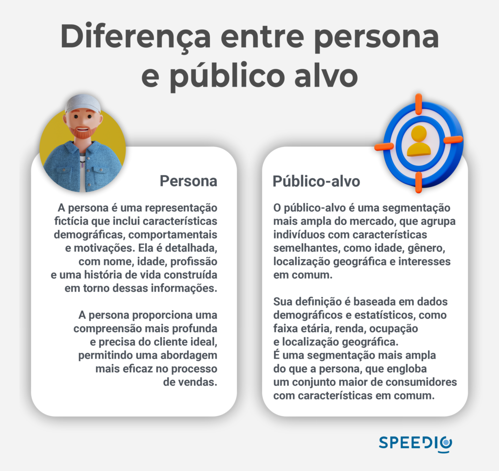

Artigos da Categoria
Dicas de como melhorar suas vendas
Como melhorar suas vendas? Neste artigo, você vai descobrir que ao conhecer os interesses e desejos dos seus leads você direciona suas estratégias de forma mais eficaz.
Neste post você verá
Por que entender o público-alvo é fundamental?
Esse é o ponto de partida para o sucesso em vendas. Isso permite que você adapte sua abordagem, comunique-se de forma eficaz e ofereça soluções que realmente atendam às necessidades dos seus clientes.
Ao entender quem são seus compradores ideais, você pode direcionar seus esforços e ações de marketing de maneira mais precisa, o que otimiza recursos e melhora os resultados.
Realize pesquisas de mercado
Pesquisa de mercado é uma ferramenta poderosa. Existem diferentes métodos, como pesquisa online, entrevista e grupos focais. O objetivo é coletar informações sobre as preferências, comportamentos, hábitos de consumo e motivações dos seus clientes em potencial.
Ideias de como melhorar suas vendas por meio de pesquisas
Defina seus objetivos
Antes de iniciar a pesquisa, tenha clareza sobre os objetivos que deseja alcançar. Quais informações você precisa obter? Quais são as principais perguntas que você deseja responder?
Escolha a metodologia adequada
Selecione a metodologia de pesquisa que melhor se adequa aos seus objetivos e ao seu público-alvo. Pesquisas online podem ser úteis para coletar dados quantitativos em larga escala, enquanto entrevistas e grupos focais são mais adequados para obter insights qualitativos mais aprofundados.
Crie perguntas relevantes
Elabore perguntas claras e relevantes que ajudem a obter as informações desejadas. Evite perguntas tendenciosas e mantenha a neutralidade para obter respostas verdadeiras.
Analise e interprete os dados
Após coletar os dados, dedique tempo para analisá-los e identificar padrões e tendências. Essas informações serão valiosas para aprimorar suas estratégias de vendas do seu negócio.
para sua empresa
Crie personas para aumentar as vendas B2B
A persona é uma peça de grande valor no processo comercial. É uma representação fictícia do seu público-alvo ideal, baseado nos dados coletados nas pesquisas de mercado e que podem ajudar a humanizar e compreender melhor o seu público-alvo.
Analise os dados da pesquisa
Revise os dados coletados e identifique padrões entre os entrevistados. Agrupe os dados com base em características comuns, como idade, gênero, ocupação, interesses, comportamentos de compra, desafios e objetivos.
Dê vida às personas
Dê nomes e características às suas personas para torná-las mais tangíveis e reais. Por exemplo: Mariana, empreendedora de 37 anos que mora em São Paulo. É fundamental que cada persona tenha uma identidade distinta.
Descreva detalhes demográficos
Para cada persona, descreva detalhes demográficos, como idade, gênero, localização geográfica e ocupação. Além disso,dê profundidade em características psicográficas, como interesses, valores, estilos de vida, motivações e desafios. Quanto mais detalhes você puder incluir, melhor compreenderá suas personas.
Identifique necessidades
Faça isso com base nas informações coletadas, identifique as necessidades e desejos de cada persona. Isso ajudará a adaptar suas estratégias de vendas para atender às demandas específicas de cada grupo.
Por exemplo, se uma persona tem como objetivo economizar tempo, você pode destacar como seu produto ou serviço pode ajudá-la nesse sentido.
Crie histórias e cenários:
Para tornar as personas mais envolventes, crie histórias e cenários fictícios que reflitam suas vidas e desafios. Pense nas situações em que suas personas podem se encontrar e como seu produto ou serviço pode ser útil nessas situações.
Use a mesma linguagem
Ao criar suas estratégias de vendas, utilize a linguagem e os pontos de referência das personas. Isso ajudará a criar uma conexão mais autêntica e relevante com seu público-alvo. Ajuste sua linguagem, tom de voz e estilo de comunicação de acordo com as preferências de cada persona.
Atualize regularmente
À medida que seu negócio evolui e o mercado muda, é importante revisar e atualizar suas personas regularmente. As necessidades e desejos do seu público-alvo podem mudar ao longo do tempo, e manter suas personas atualizadas garantirá que sua estratégia permaneça funcional.

Aprimore suas habilidades de comunicação
A comunicação eficaz desempenha um papel fundamental no processo de vendas. Ela permite que você transmita claramente os benefícios do seu produto ou serviço, estabeleça confiança com os novos clientes e compreenda suas necessidades e desejos.
Saber se comunicar de maneira persuasiva, ouvir ativamente e demonstrar empatia são habilidades essenciais que podem fazer a diferença entre fechar um negócio e perder uma oportunidade.
Comunicação persuasiva
A comunicação persuasiva envolve transmitir informações de forma convincente, o que vai influenciar as decisões dos clientes. Alguns elementos-chave da comunicação persuasiva incluem:
Conheça seu produto ou serviço
Tenha o conhecimento na ponta da língua sobre os benefícios e características do que você está vendendo. Destaque as vantagens que são relevantes para o cliente e mostre como seu produto pode resolver seus problemas ou atender suas necessidades.
Foque nos benefícios
Ao se comunicar com os clientes, concentre-se nos benefícios do produto ou serviço, em vez de apenas listar suas características. Mostre como ele pode melhorar a vida ou o trabalho do cliente para trazer resultados positivos e agregar valor em seu processo comercial.
Use histórias e exemplos
As pessoas se conectam melhor com histórias do que com fatos secos. Utilize histórias e exemplos reais de como seu produto ajudou outros clientes a alcançarem sucesso ou resolverem problemas específicos
Isso torna a sua comunicação mais envolvente e convincente. Outra dica é alimentar as redes sociais da empresa com a estratégia de prova social.
Escuta ativa
A escuta ativa é uma habilidade crucial para entender as necessidades e desejos do cliente. Algumas práticas para melhorar a escuta ativa incluem:
Esteja presente e focado
Demonstre interesse real no que o cliente está dizendo e evite distrações. Mantenha contato visual e mostre que você está atento à conversa.
Faça perguntas relevantes
Pergunte coisas que estimulem o cliente a falar mais sobre suas necessidades, desafios e objetivos. Isso ajuda a obter informações valiosas e aprofundar a compreensão da situação do cliente.
Repita e resuma
Fale resumidamente as principais informações fornecidas pelo cliente para demonstrar que você está ouvindo atentamente e compreendendo suas necessidades. Isso também ajuda a evitar mal-entendidos.
O atendimento ao cliente é a chave para alavancar as vendas
Quando se trata de aumentar as vendas e garantir o sucesso de um negócio, não há nada mais impactante do que oferecer um atendimento ao cliente excepcional. O atendimento de qualidade não apenas cria uma experiência positiva para os clientes, mas também constrói relacionamentos duradouros e fortalece a reputação da empresa.
Fidelização de clientes
Clientes satisfeitos têm maior probabilidade de se tornarem clientes fiéis. Ao oferecer um atendimento excepcional, você cria um vínculo de confiança e lealdade, que incentiva os clientes a retornarem para futuras compras.
Recomendações e boca a boca positivo
Os clientes satisfeitos são os melhores defensores de uma empresa. Eles estão mais propensos a compartilhar suas experiências positivas com amigos, familiares e colegas, o que pode gerar novas oportunidades de venda por meio de recomendações e boca a boca positivo.
Diferenciação da concorrência
Em um mercado competitivo, o atendimento ao cliente pode ser um diferencial importante. Se você se destacar por oferecer um serviço excepcional, isso pode atrair novos clientes que buscam uma experiência diferenciada, mesmo que isso signifique pagar um pouco mais pelos produtos ou serviços.
Você sabe o que é customer success? Leia o nosso artigo e descubra como o atendimento ao cliente pode ser eficiente com esse setor em sua empresa.
Aperfeiçoe suas habilidades de negociação e aumente suas vendas
A negociação desempenha um papel fundamental no processo de vendas. A habilidade de negociar efetivamente pode resultar em melhores vendas, relacionamentos mais fortes com os clientes e maior sucesso nos negócios.
Feche as vendas
Negociar de forma eficaz aumenta suas chances de fechar negócios. Ao compreender as necessidades e desejos do cliente, você pode adaptar sua abordagem e apresentar propostas de valor que atendam às suas expectativas. Isso ajuda a criar um ambiente propício para a conclusão de uma venda bem-sucedida.
Construa relacionamentos
A negociação envolve interações entre duas partes, e uma negociação bem-sucedida resulta em relacionamentos mais fortes com os clientes. Demonstrar habilidades de negociação eficazes, como ouvir ativamente e encontrar soluções que atendam às necessidades do cliente, fortalece a confiança e o respeito mútuo.
Supere objeções
Durante o processo de vendas, é comum encontrar objeções dos clientes. Ter habilidades de negociação desenvolvidas permite que você lide com essas objeções de maneira eficaz, apresentando argumentos convincentes, fornecendo evidências e encontrando soluções que eliminem as preocupações do cliente.
Desenvolvemos um artigo completo que explica as formas para superar as objeções em vendas no mercado B2B, dê uma lida.
Impulsione seus resultados com insights estratégicos através das métricas
No mundo dos negócios, acompanhar e analisar métricas de vendas é uma prática essencial para identificar oportunidades de melhoria e impulsionar os resultados..
Ao monitorar indicadores-chave de performance, como taxa de conversão, ticket médio e ciclo de vendas, você pode obter insights valiosos sobre o desempenho de sua equipe de vendas e ajustar suas estratégias para maximizar o sucesso.
Identificar áreas de melhoria
Você pode identificar áreas que precisam ser aprimoradas. Isso pode incluir identificar gargalos no ciclo de vendas, problemas na taxa de conversão ou oportunidades para aumentar o ticket médio.
Ao identificar essas áreas, você pode implementar estratégias específicas para corrigir as deficiências e melhorar o desempenho.
Tomar decisões
Ao analisar métricas de vendas, você tem dados concretos para tomar decisões. Em vez de confiar apenas em intuições ou suposições, você pode utilizar informações concretas para guiar suas estratégias de vendas. Isso aumenta suas chances de sucesso e minimiza os riscos de tomar decisões baseadas em suposições equivocadas.
Ajustar estratégias e táticas
Ao acompanhar as métricas, é possível identificar quais estratégias estão funcionando e quais precisam ser ajustadas. Por exemplo, se você perceber que sua taxa de conversão está abaixo do esperado, pode explorar maneiras de melhorar seu processo de vendas ou treinar sua equipe para aprimorar suas habilidades de fechamento.
Caso deseje aprender mais sobre métricas, visite nosso artigo sobre CLV, LTV, CAC e ROI.
Se atualize sobre as tendências e ganhe vantagem competitiva
Estar atualizado é essencial para o sucesso de qualquer empresa. Compreender as mudanças no comportamento do consumidor e adaptar-se às demandas emergentes podem impulsionar suas vendas e garantir uma posição vantajosa em relação à concorrência.
Fique atualizado
Esteja constantemente informado sobre as tendências e desenvolvimentos no seu setor. Acompanhe notícias, participe de eventos relevantes e mantenha-se conectado com a comunidade empresarial. Isso ajudará você a identificar oportunidades de crescimento e inovação.
Esteja aberto à mudança
Esteja disposto a adaptar suas estratégias e abordagens de acordo com as tendências emergentes. Seja flexível e ágil na implementação de mudanças para atender às necessidades do mercado.
Promova a inovação
Cultive uma cultura de inovação dentro da sua equipe e organização. Encoraje o pensamento criativo, a experimentação e o aprendizado contínuo. Esteja aberto a novas ideias e implemente melhorias constantes nos seus produtos, serviços e processos de vendas.
Toda empresa almeja melhorar suas vendas, mas isso não é algo que vai acontecer da noite para o dia. Como vimos no artigo, existem diversos fatores que precisam ser analisados e colocados em prática.
Com dedicação, esforço e a aplicação de estratégias eficazes, você estará no caminho certo para alcançar o sucesso nas vendas e impulsionar o crescimento do seu negócio.
para sua empresa